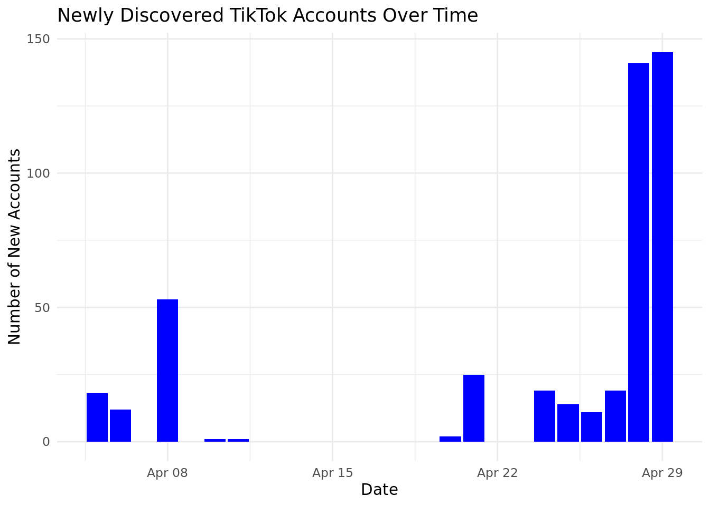

TikTok Coordinated Sharing Network
Introduction
This document serves as a proof of concept, developed within the framework of the Vera.ai Horizon EU project. It presents a comprehensive methodology for tracking and analyzing coordinated sharing activities on TikTok, employing the traktok package for data collection via the TikTok Research API and CooRTweet for the analysis of coordinated behavior patterns.
Initial Discovery: The analysis initiates by focusing on content tagged with the #moskow hashtag. This first step successfully identifies a preliminary group of accounts involved in coordinated sharing activities in the aftermath of the attack in Moscow. This discovery lays the groundwork for an extensive examination of coordinated dynamics across social media platforms.
On April 19, 2024, we received a list of 513 problematic accounts from a trusted partner within the Vera AI consortium. Accounts that were mentioned at least twice on this list have been added to our pool of monitored accounts.
Daily Monitoring and Analysis: Subsequent to the initial identification, the methodology transitions into a phase of daily monitoring. In this phase, the script consistently retrieves videos posted by the previously identified accounts, with the goal of detecting both ongoing and emerging instances of coordinated behavior. As new accounts manifesting coordinated behavior (time_window = 180, min_participation = 2, edge_weight = 0.5) are discovered, they are incorporated into the daily monitoring routine.
This approach ensures continuous updates on the number of newly discovered coordinated accounts, highlighting the fluid nature of social media coordination. Enhanced by interactive visualizations, the analysis sheds light on the shifting landscape of account activities and the intricate network of interactions among them on the TikTok platform.
By delineating these processes, the proof of concept underscores the potential for advanced analytical tools to reveal and understand the complex phenomena of coordinated social media behavior within the context of significant societal events.
Today Output
We attempted to retrieve videos from 898 monitored accounts, during the period from August 12, 2024 to August 27, 2024. We successfully retrieved 4,818 recent videos. Using available data, we accessed a total of 1,677 videos posted on TikTok within the timeframe. Our analysis for coordinated detection in these videos identified 14 accounts spread across 4 components, and it also uncovered 4 new accounts exhibiting coordinated behavior.
Error Summary: Total errors encountered: 44 Errors by type:
api_error api_failure_summary api_response
22 1 7 chunk_retrieval_failure max_retries_exceeded 13 1
Sample Errors: Type: chunk_retrieval_failure, Message: No videos retrieved Type: chunk_retrieval_failure, Message: No videos retrieved Type: api_error, Message: Type: api_response, Message: No videos found in API response Type: api_error, Message:

Explore the interactive chart. Node click to visit the TikTok account.
Interactive visualization of coordinated account detected today. Click on a node to visit the respective TikTok account.
About
| vera.ai is a research and development project focusing on disinformation analysis and AI supported verification tools and services. Project funded by EU Horizon Europe, the UK’s innovation agency, and the Swiss State Secretariat for Education, Research and Innovation |
References
Giglietto, F., Marino, G., Mincigrucci, R., & Stanziano, A. (2023). A Workflow to Detect, Monitor, and Update Lists of Coordinated Social Media Accounts Across Time: The Case of the 2022 Italian Election. Social Media + Society, 9(3). https://doi.org/10.1177/20563051231196866